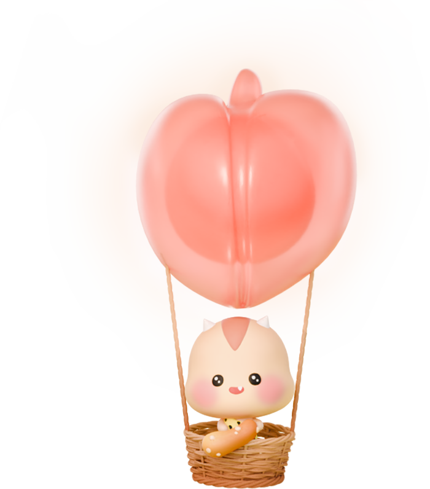

<!DOCTYPE html>
<html lang="ko">
<head>
    <meta charset="UTF-8">
    <meta name="viewport" content="width=device-width, initial-scale=1.0">
    <title>CSS 배경</title>
    <style>
        body {margin: 0;}
        .section {
            position: relative;
            background-image: url(../../assets/ht/main_visual.jpg);
            background-repeat: no-repeat;
            /* 
            contain: 요소 크기에 맞게 배경 이미지를 잘림 없이 -> 박스에 빈 영역이 생길 수 있다.
            cover: 요소 크기에 맞게 비율을 유지하면서 -> 이미지의 일부가 잘릴 수 있다.
            */
            background-size: cover; /* px, % 가능 */
            /* background-position: -260px 0; */
            background-position: 50px;
            background-position: left;
            background-position: top;
            /* background-position: center 0; */
            height: 100vh;

            /* 
            background: 색|이미지 [반복] [위치]/[크기] [고정]; 
            기본값: transparent|none repeat 0 0/100% scroll;
            */
            /* background: #000 url(../../assets/ht/main_visual.jpg) no-repeat 50%/cover; */
        }
        .ballon {
            position: absolute;
            left: 63%; top: 8%;
            width: 18vw; height: 371px;
            background-image: url(../../assets/ht/main_visual_ballon2.png);
            /*
            repeat: 반복(기본값)
            no-repeat: 반복 없음
            reoeat-x: x축 반복
            reoeat-y: y축 반복
            */
            background-repeat: no-repeat;
            background-size: contain;
            /* background-position: 0 0; */
        }
    </style>
</head>
<body>
    <!-- https://www.ht.co.kr/ -->
     <div class="section">
        <div class="ballon">
            <!--  -->
        </div>
     </div>
</body>
</html>